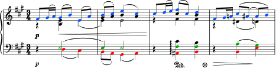
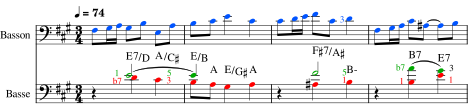
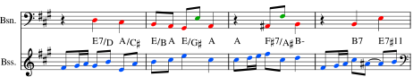
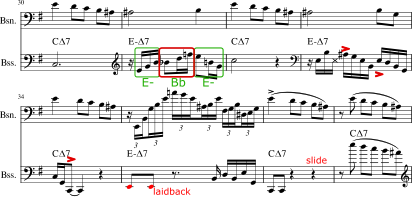
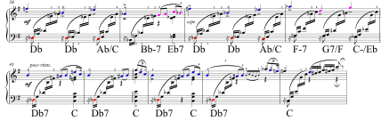
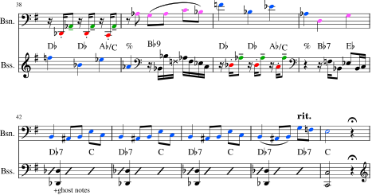

Compositions
Les Saisons
Mon projet personnel Les Saisons s’est développé à travers la composition ou l’arrangement, et l’enregistrement de douze pièces, une pour chaque mois de l’année. Il s’inspire notamment du concept Seasons de Ben Wendel et du cycle Les Saisons de Piotr Ilitch Tchaïkovski. Chaque mois est représenté par un morceau composé, repris ou adapté, avec parfois l’écriture de nouvelles paroles.
Ce projet a été joué en solo, en duo à l’église Saint-François avec l’accordéoniste Dantong Wang, et en full band aux Jumeaux Jazz Club avec une formation de 13 musiciens et musiciennes, réunissant basse, batterie, section de soufflants, piano, vibraphone et une chanteuse lyrique.
Janvier
Pour le mois de janvier, j’ai choisi de travailler à partir de January: At the Fireside (Au coin du feu), première pièce du cycle pour piano Les Saisons de Piotr Ilitch Tchaïkovski, composé en 1875. Ce cycle rassemble douze pièces, chacune associée à un mois de l’année.
Pour mon projet, j’ai réalisé une réduction de cette pièce pour un duo basse et basson, à partir de la partition originale pour piano. La vidéo ci-dessous présente cette version.
Cette réduction est passée par une analyse de la forme et des accords, ainsi qu’un repérage des voix principales à redistribuer entre les deux instruments. L’original faisant 134 mesures, j’ai effectué des découpes à des passages stratégiques pour réduire le tout à 57 mesures et limiter la durée totale à trois minutes.
La cohérence de l’ensemble a été vérifiée en chantant intérieurement le thème et en imaginant puis en imitant corporellement les différents accompagnements. La suite présente quelques-uns des points de réflexion abordés lors de l’arrangement.
Souligner l’harmonie par la basse puis par le basson
La figure suivante montre le tout début du texte original pour piano.

Dans la réduction pour basson et basse, la mélodie est confiée au basson, tandis que la basse assure l’accompagnement harmonique.

À certains passages, la mélodie est confiée à la basse tandis que le basson accompagne.

La mélodie est soulignée en bleu et la basse en rouge. J’ai souligné en vert une sélection de voix intermédiaires qu’il me semble intéressant de restituer en complément.
La figure 6 constitue le repère pour l’analyse.
Mesure 1 : on note le frottement b7–1 de l’accord de degré V, qui se résout sur 3–5 de l’accord de degré I. Dans la version où l’accompagnement est réalisé à la basse, cet effet peut être conservé en jouant en doubles cordes.
Mesure 2 : j’ai choisi de ne pas répéter le mi au deuxième temps afin d’alléger l’interprétation à la basse électrique.
Mesure 3 : j’ai choisi de supprimer la ligne do♯–si, qui provoquait une doublure du si au troisième temps. J’ai préféré conserver la voix fa♯–fa♯, qui marque une sixte avec la basse au deuxième temps, comme dans la mesure 2.
Mesure 4 : on note la conduite de voix 1–1 et b7–3, qui est maintenue lorsque la basse électrique accompagne grâce au jeu de deux notes simultanées.
La version avec le thème au basson est utilisée au tout début afin d’exposer clairement le thème et l’harmonie sous-jacente, avec la mélodie au basson et un jeu en doubles cordes à la basse. Lors de la répétition du thème, le rôle mélodique passe à la basse afin de créer un contraste.
Clin d’œil aux langages jazz et musiques actuelles
Cet arrangement est une commande pour la carte de vœux de l’HEMU, avec pour objectif de faire figurer ensemble l’instrument jazz et musiques actuelles de l’année, la basse électrique, et l’instrument classique de l’année, le basson, choisis par l’équipe de communication de l’HEMU pour les affiches de l’école.
Un des défis était d’introduire certains éléments du langage jazz tout en conservant les caractéristiques de l’œuvre originale.
Le passage des mesures 30 à 37 de l’original présente quatre fois une alternance question-réponse :
- Question : une première mesure sur CMaj7, toujours identique ;
- Réponse : une deuxième mesure sur EminMaj7, avec différents traits virtuoses.
Ce passage a été utilisé pour introduire des éléments stylistiques issus du jazz et des musiques actuelles, les réponses des mesures 31, 33, 35 et 37 étant traitées comme des mini-solos.

Dans le texte original, la mesure 31 contient une appoggiature la♯–si, qui a pour effet de placer une ♯11, triton de la tonique mi, sur un temps fort. Un clin d’œil au langage jazz a été introduit ici en remplaçant cette appoggiature par l’utilisation d’un procédé courant dans le jazz : jouer des paires de triades séparées d’un triton, ici les triades Mi mineur et Sib majeur.
La mesure 33 est utilisée pour jouer à la basse des doubles croches avec des accents évoquant un phrasé rock-funk : deux accents sur le temps à la mesure 33, puis un accent décalé à la mesure 34. En répétition, cette dernière idée n’a pas été conservée car elle donnait une sensation de décalage avec le basson. La version enregistrée s’arrête alors sur un do grave joué sur le premier temps de la mesure 34.
La mesure 35 contient au basson une légère adaptation de la phrase virtuose du texte original, pensée comme un passage solistique du basson faisant suite aux passages solistiques de la basse.
À la mesure 37, le texte original reprend la mesure 36 avec un déplacement rythmique. Dans l’arrangement, basse et basson jouent cette partie à l’unisson afin de créer un effet d’insistance, tout en ralentissant ensemble pour marquer un changement de partie.
Raccourcissement
Le texte original présente un développement de 26 mesures à partir de la mesure 38, avant une réexposition à la mesure 64. J’ai choisi de raccourcir ce développement en construisant un assemblage d’extraits qui conserve une continuité musicale et amène naturellement la réexposition.

Dans cette section, les accords sont exposés par des séries d’arpèges couvrant un spectre très large. La couleur bleue représente la mélodie principale, la couleur magenta les compléments mélodiques faisant le lien entre les phrases, et la couleur rouge une partie de basse structurante.

À la mesure 38, les arpèges sont remplacés par des motifs rythmiques à deux notes composés de la note de basse et d’une voix intermédiaire ajoutée. Cette note tenue permet de sous-entendre les accords Db et Ab/C.
À la mesure 40, la basse et le basson échangent leurs rôles pour créer de la variation. Aux mesures 39 et 41, le basson joue les compléments mélodiques pendant que la basse effectue des fills.
Dans le texte original, les mesures 42 à 45 contiennent une phrase répétée plusieurs fois avec des variations dans les ornementations. Ces mesures permettent de créer une montée d’intensité grâce à la répétition mélodique, jusqu’à l’accord de Do qui marque une demi-cadence en Fa mineur.
Le point d’orgue qui suit permet de relancer directement un thème final, ce qui contribue à obtenir une version raccourcie adaptée au format de la vidéo.
Thème final
La figure suivante montre la partition originale entière, en soulignant les différentes occurrences du premier thème.

Source : partition de January: At the Fireside
Le thème est présent quatre fois et découpé en cellules A–B–A–C de manière identique. Lors de la dernière occurrence, la cellule C est remplacée par une cellule D.
L’analyse harmonique des cellules B et D donne :
- Cellule B : | F♯/A♯ Bm | B7 E7 |
- Cellule D : | F♯/A♯ Bm | G♯/B♯ C♯m |
On note que la cellule D est une répétition de la moitié de la cellule B avec une transposition, ce qui donne un effet d’accélération vers la fin du morceau.
Afin de raccourcir la version basse-basson, j’ai choisi de jouer directement les cellules A–D, ce qui précipite la fin du morceau et permet de conserver une durée totale inférieure à trois minutes.
Les mesures 93 à 97 ont été réduites à deux voix, puis les mesures 98 à 105 sont remplacées par une mesure de fin.
Février
Mars
Avril
Mai
Juin
Juillet
Août
Septembre
Octobre
Novembre
Décembre